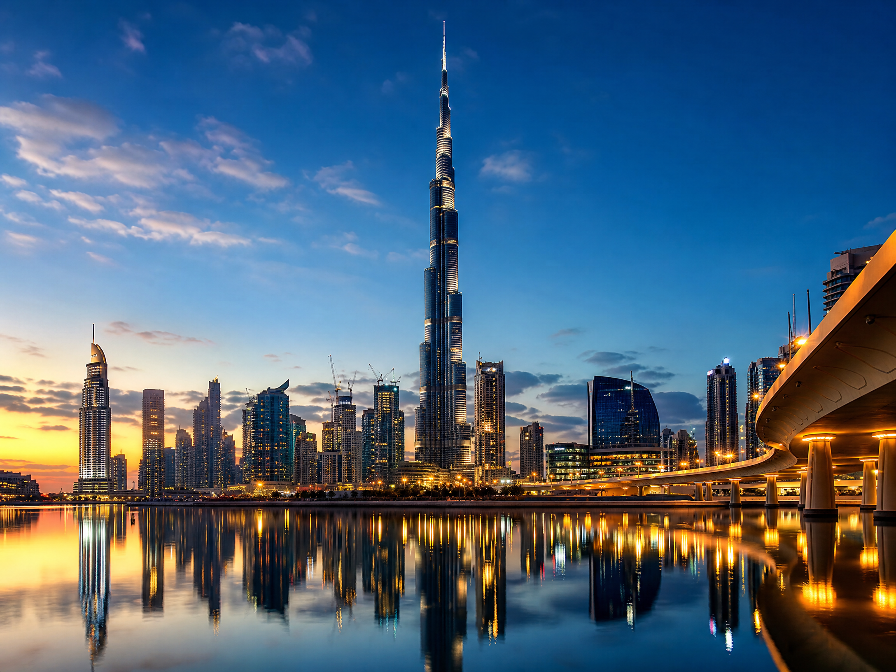

Too many choices
Visitors may feel overwhelmed by hundreds of search results.
GRADE 9 · SUBJECT: AI · TOPIC 03
An AI-powered virtual guide helping visitors explore the UAE’s landmarks, culture and natural beauty — one meaningful route at a time.
Discover the idea →NOVA is a concept for an AI tourism assistant that listens to visitors and creates personalised UAE journeys.
It uses natural language processing to understand questions, recommendation systems to match interests with places, and location information to build realistic routes. The technology works quietly in the background so the traveller can focus on the experience.
For a first-time visitor, planning can become confusing. A list of famous places does not explain what is nearby, what matches their interests or how to enjoy a day comfortably.
Visitors may feel overwhelmed by hundreds of search results.
Landmarks are more meaningful when their culture and history are explained.
Heat, travel distance, language and busy times can change a day’s plan.
Instead of giving every tourist the same plan, the assistant uses a visitor’s interests, available time and location to suggest a route that feels personal.
“I want a calm cultural afternoon” is enough to begin.
AI connects landmarks, distance, timing, weather and interests.
The assistant explains the story behind each place in simple language.
“Start at Al Fahidi, walk beside the creek, then visit the Dubai Frame before sunset.”
AI can help visitors discover both the famous skyline and the quieter places that make the UAE special.

01 / FUTUREArchitecture, light and a city that keeps imagining what comes next.
Art, heritage and the stories behind the capital’s iconic spaces.
Palms, mountain air and a slower side of the UAE.
NOVA connects with UAE Vision 2071 by showing how AI can support a knowledge-based, innovative and welcoming country.
Visitors can discover heritage areas and local stories, not only famous photo spots.
Better routes can reduce unnecessary journeys and spread visitors across more places.
Multilingual guidance can help visitors explore with greater confidence.
CONCLUSION · FUTURE POSSIBILITIES
In the future, NOVA could work through smart glasses, translate live conversations, recommend low-impact adventures and help protect fragile places. Good technology should help people notice more of the world around them.
Return to the top ↑